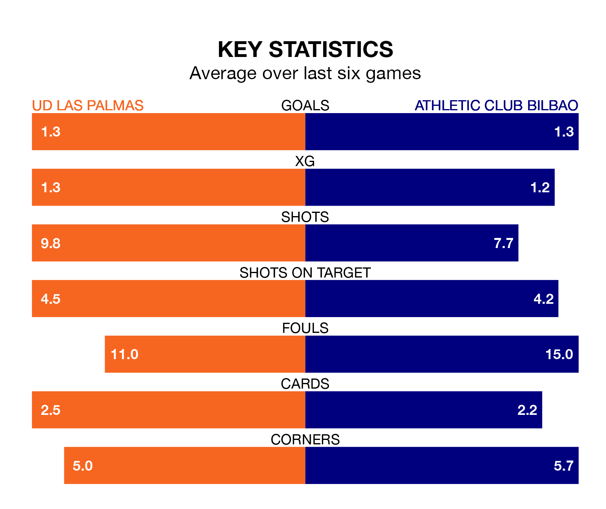

Two of La Liga's meanest defences go head-to-head at Estadio de Gran Canaria on Sunday, when Athletic Club Bilbao visit UD Las Palmas.
Only one side – Real Madrid – has conceded fewer goals than Athletic to date: the away side have let in just 26 goals in 27 games.
Las Palmas have conceded 29 goals in 27 games, giving them the joint-fourth tightest back line so far this season.
Key to Athletic's home form has been Unai Simón, who has allowed 0.96 goals past him per 90 minutes, compared to 0.93 for Álvaro Vallés in the opposite net.
In the last 10 years, Las Palmas and Athletic have played each other on seven occasions. They won two each, and they drew three times.
On average, Las Palmas scored 1.0 goal and Athletic 1.3 in those matches.
Their last meeting was on December 20, when Athletic won 1-0 at home.
Athletic are fifth in the table after 27 games, of which they have won 14 and drawn eight, earning 50 points.
Las Palmas are three places behind the away team in eighth, with 10 wins and seven draws putting them on 37 points.
The hosts are in disappointing form in La Liga, with one win and three draws from their last six games.
With two wins and three draws over that period, Athletic's form is better – they have taken nine points from 18, compared to Las Palmas's six.
Las Palmas's last match was on March 2, a 3-3 draw against Getafe CF, with Munir El Haddadi, Sandro Ramirez and Sergi Cardona getting the goals for Las Palmas.
Athletic drew 0-0 with FC Barcelona last time out, on Sunday.
Sunday's match will be refereed by Miguel Ángel Ortiz Arias, who has taken charge of 15 La Liga games so far this season, issuing six red cards and booking 54 players. He has awarded three penalties.
The last Athletic game Ortiz Arias refereed was the 1-1 draw away at Granada CF on December 11. He is yet to oversee a match featuring Las Palmas this season.
Updated: 09:34 (UTC), 08/03/24